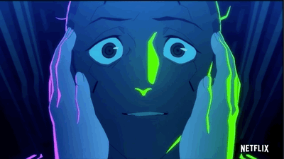
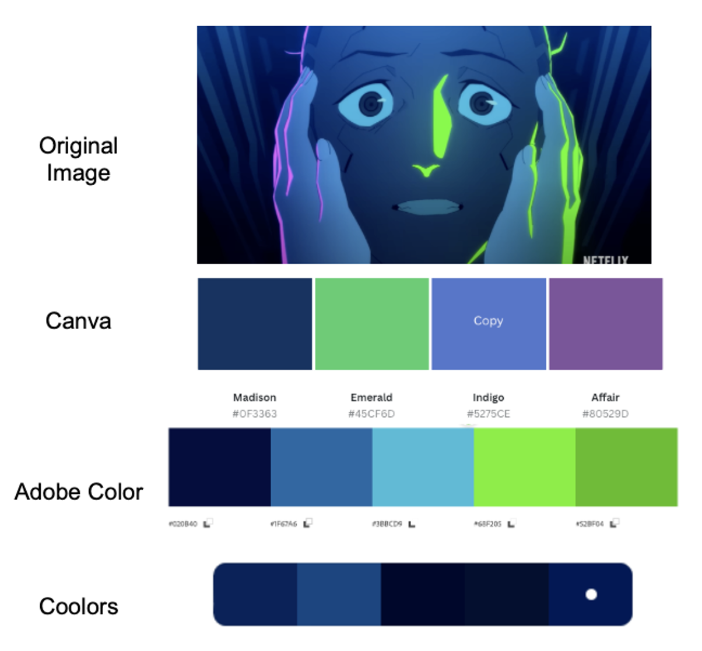
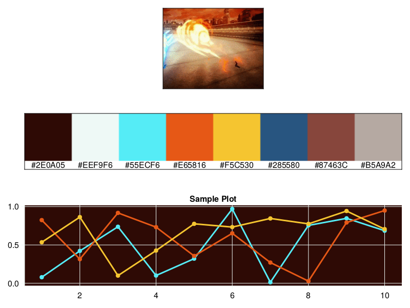

Have you ever watched a movie and thought to yourself: “I bet that scene would make for a great plotting theme.” Yeah, me too!
Recently I’ve been drawing inspiration from scenes from anime such as Cyberpunk: Edgerunners (on Netflix), where rich greens, bright pinks, and yellows form a coherent color signature. Color palettes can invoke memories of characters or key moments, and I’ve found that incorporating even a few of those colors in my data visualizations has rekindled the joy of opening up my IDE and doing some EDA.
Unfortunately, creating custom palettes is time intensive and I have more inspiration than I have free time (especially with two young kids!). Existing free online color palette generators such as Coolors, Adobe Color, and Canva reveal some limitations:
- Many solutions are manual - users need to manually select colors from an image, which relies on the users’ design sense to pick meaningful color combinations
- Many Automated solutions are incoherent for data visualization - they might select colors that are so similar that they’re indistinguishable from each other
- Existing solutions only take a static image that may fail to capture key colors from the entire scene
Here’s an example of what I mean:
I have a GIF captured from a Cyberpunk: Edgerunners music video that I want to use to make a color palette for data viz. There’s two characters in the scene, Lucy and David:

Because existing solutions only let you take a static image, we’re forced with taking a single frame from the animation and plug it into a few of them:

- Canva provides the best palette but only allowed for 4 colors, and notice that purple color doesn’t appear in the original image
- Adobe Color completely missed the pink color and went right to blues and greens
- Coolors picked a bunch of blue colors, and the last three colors are really hard to tell which is which!
Solution: Combine clustering with a few extra steps
Given these gripes with existing palette generators, I decided to make a little function in Julia to extract coherent color palettes from animated GIFs. Clustering (K-means) can summarize the key colors in the GIF and we can use a few simple rules to make a data viz color palette from those key colors.
Julia’s Images.jl library is great for working with images (to include animated GIFs), and Julia’s type system and native arrays make it trivial to do math on both static and animated images.
Methods
K-means clustering is a tried and true method for extracting color palettes from images. The basic idea with K-means is that it will iteratively find \(K\) cluster centers from the image, where each cluster center is a color that’s close to a bunch of colors in the image.
Rule 1: Ensuring that we use an actual color from the image
The downside of K-means is that there’s no guarantee that this color actually appears in the original image!
We can overcome this with a simple decision rule that substitutes each cluster center with the nearest closest color that exists in the original image. Since each pixel is just an array of numbers, we can calculate closeness using a simple measure like Euclidean distance.
Rule 2: Use colors that are different from each other
I also want to ensure there’s a minimum distance or threshold value between every color in our color palette so that viewers can tell them apart.
To make this happen we can use a greedy algorithm, something like the below:
- Given an initial list of \(K\) colors from the K-means cluster centers:
- Initialize our selected palette with two colors:
- Start with the most common color in the image - this’ll be the background color in our data viz
- Find the color with the highest distance from the most common color - this’ll be the text/axis/gridline color since it pops out the most from the background
- Rule out any colors from the list of remaining cluster centers that don’t meet the minimum distance threshold to any of the selected colors
- From the remaining cluster centers, add the color that has the highest mean distance to the colors in the selected palette
- Repeat steps 2 and 3 until there are no more cluster centers to pick from
- Initialize our selected palette with two colors:
Results
I won’t go through the code (it’s all in this gist), but we can peek at some fun results!
Cyberpunk: Edgerunners
Using the gist as palette.jl:
include("palette.jl")
filepath = "data/edgerunners mv.gif"
# Set a seed for reproducibility
Random.seed!(42)
# Get the custom color palette
top_colors = make_palette(filepath, 0.4; n_clusters=30)
# Create a summary plot of the results
fig = create_summary(filepath, top_colors)Original Image: Source
Result:
Note: the summary image only shows a single frame from the GIF at the top, but we did indeed use the whole GIF to find the colors

Here we see that our palette creator was able to get both the pink and green in the original image, and set the background to that cool dark blue color. It uses Lucy’s white hair color as the text/grid color and it even picked up the blue of the skin tones.
Zuko vs Azula from Avatar: The Last Airbender
Original: Source

Result:

Watch Zuko and Azula battle it out in lineplot form!
Genji from the Overwatch 2 Cinematic Trailer
Original: Source

Result:

Taking this cool scene from the the Overwatch 2 Cinematic Trailer gets us a color palette that captures a lot of the key colors of the character - the color of the sword, the glowing visor, and Genji’s uniform all made its way into the palette.